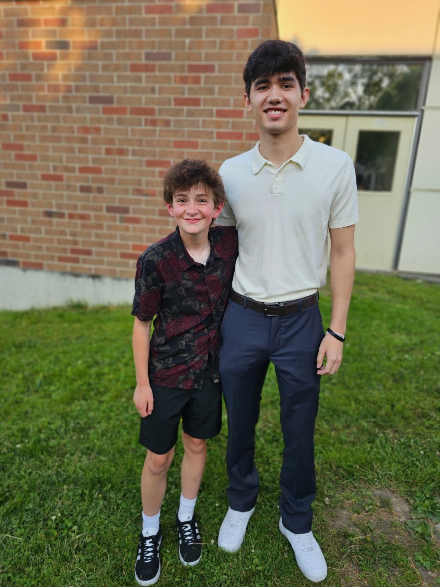
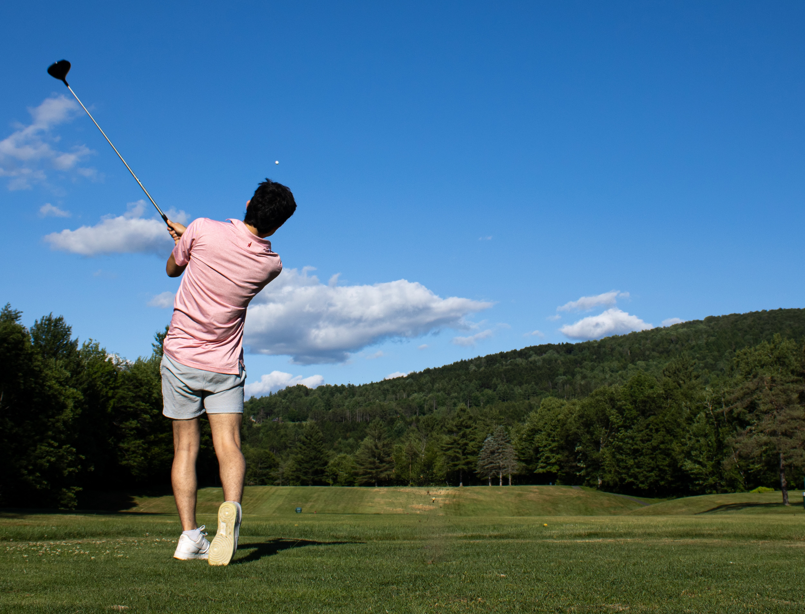
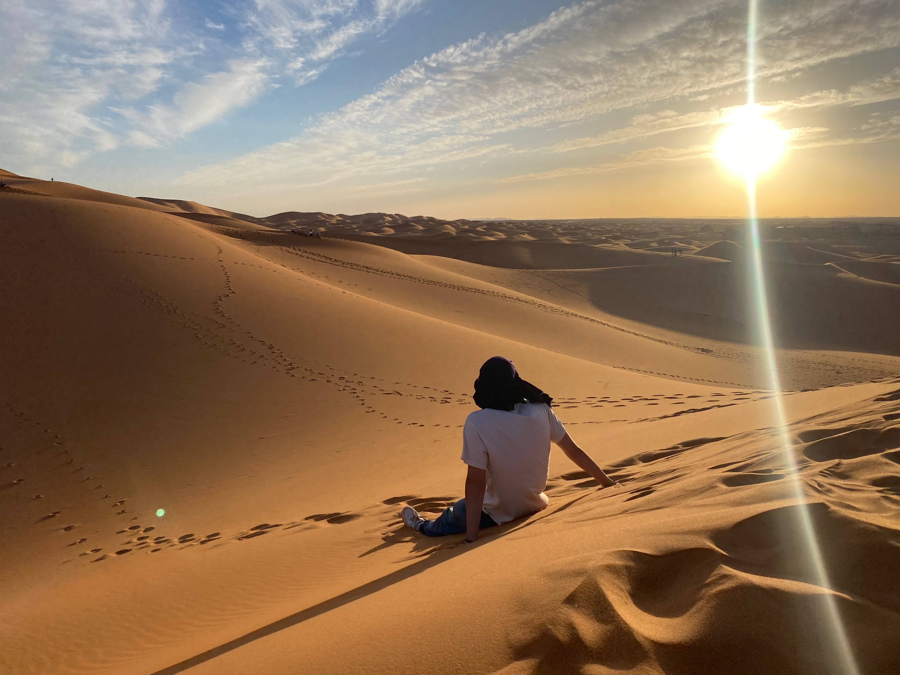

Substitute Teaching
Substitute teaching has been one of the more unexpected parts of my experience. I enjoy the variety of it and the challenge of stepping into a new classroom, figuring things out quickly, and helping keep the day moving.
About Me
Senior at Boston University studying Mechanical Engineering
I am a senior at Boston University studying Mechanical Engineering. Most of my time is spent on classes, projects, and design work, but outside of school I enjoy golf, travel, and substitute teaching.
I like having a mix of technical work and people focused experiences. Engineering keeps me challenged, teaching keeps things interesting, and golf and travel give me a chance to reset and enjoy something different.

Substitute teaching has been one of the more unexpected parts of my experience. I enjoy the variety of it and the challenge of stepping into a new classroom, figuring things out quickly, and helping keep the day moving.
Travel is something I really value because it pushes me out of routine. I like seeing new places, taking in different environments, and getting the kind of experiences that are hard to forget.
Golf is one of my favorite ways to spend free time. I like that it is competitive without feeling rushed, and that even a casual round still gives you something to work on.
I try to keep a good balance between school and everything else. A lot of the best parts of college have come from the experiences outside class just as much as the work inside it.
A Few Photos



A Little More
What I enjoy most is having variety. I like the problem solving side of engineering, the adaptability that comes with teaching, and the slower pace of being out on a course or in a completely new place.
That mix is a big part of who I am. I take school seriously, but I also want the time outside of it to be meaningful, fun, and memorable.
Feel free to reach out for projects, collaboration, or opportunities.